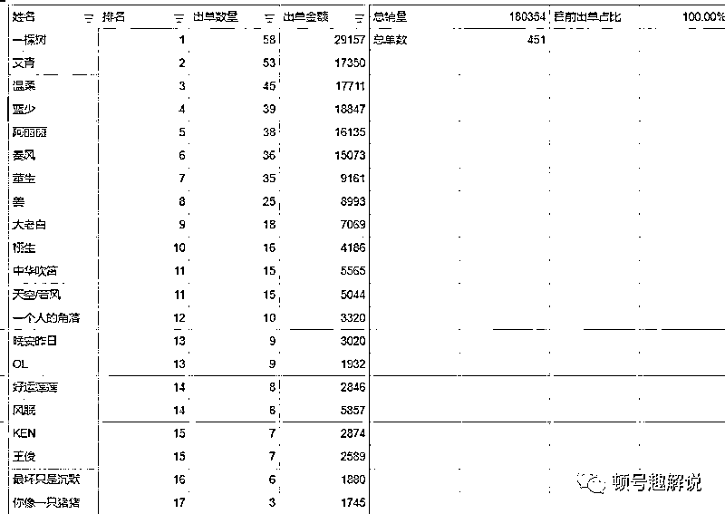
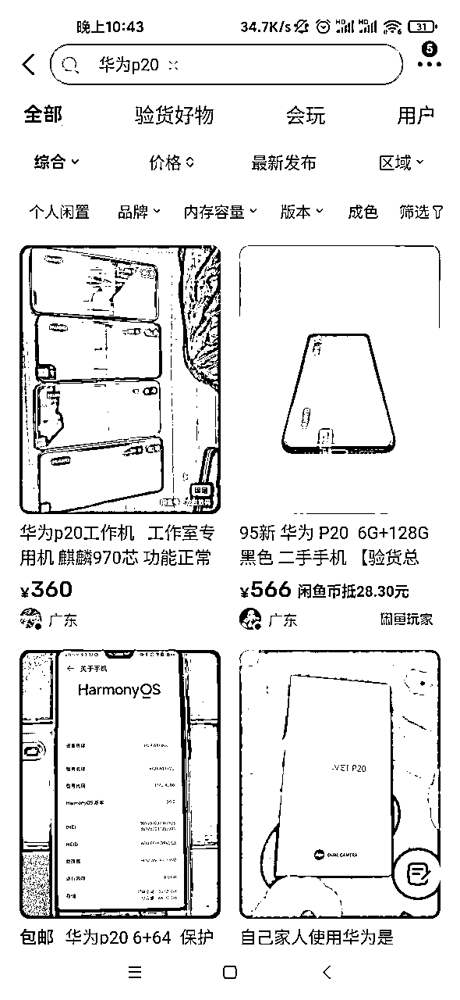
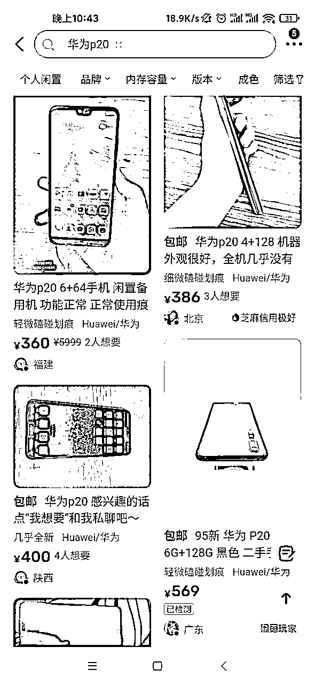
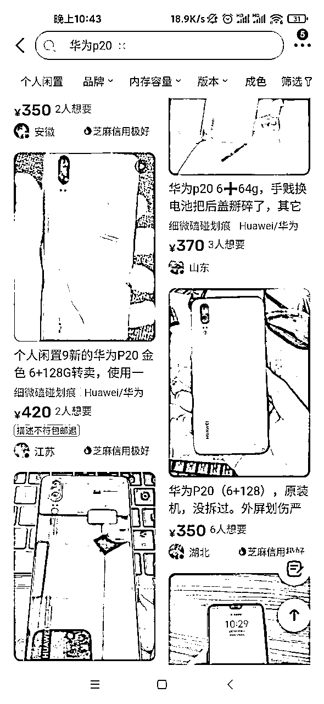
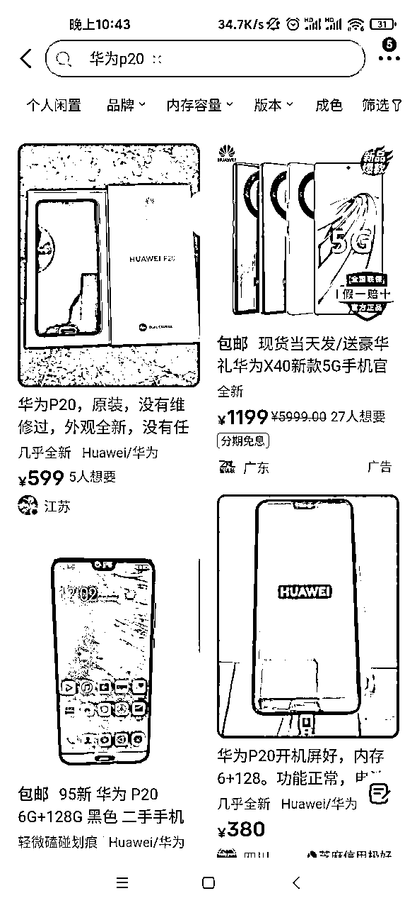
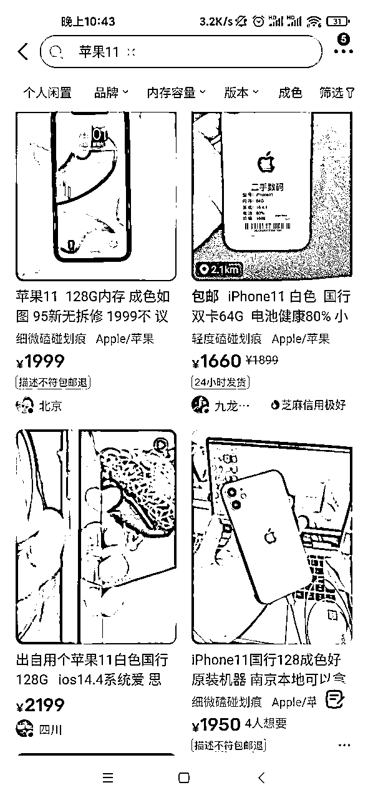
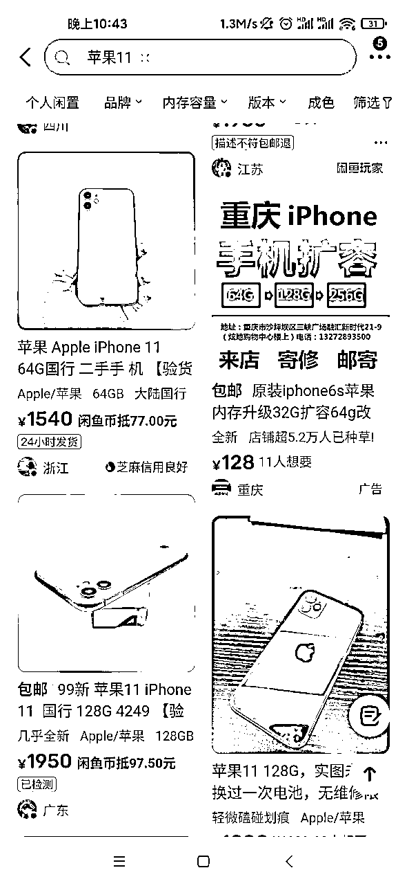
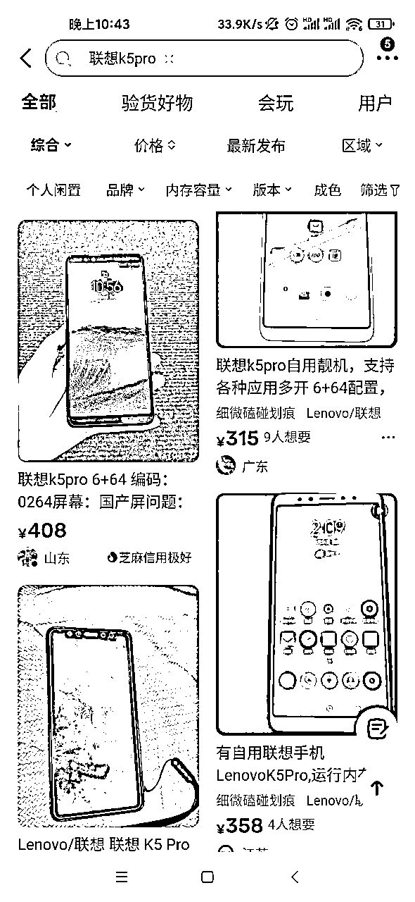
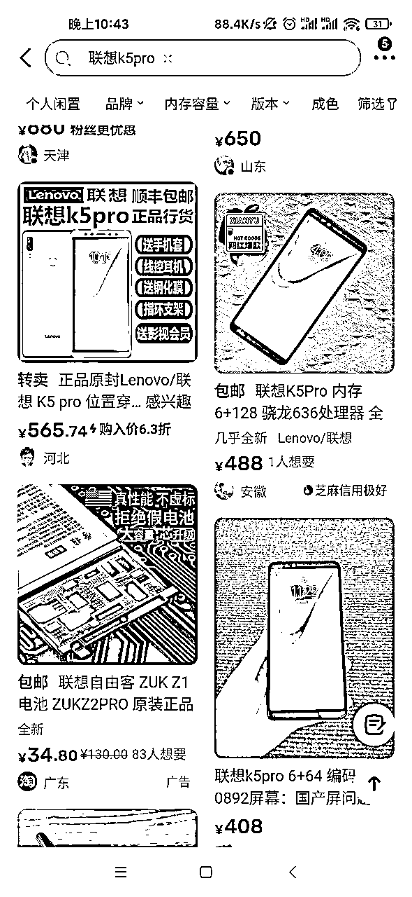

来源：https://t8g8dj5sso.feishu.cn/docx/XkFtdo5AsoahWgxKjhDcB0i9npb
各位生财的朋友们好，我是顿号，一个95后重庆妹子，生财新人一枚！深耕闲鱼第八个年头。
小伙伴们可能有些小伙伴不认识我！
做个简单的自我介绍
【昵称】顿号
【来自哪里】重庆
【我的职业】闲鱼无货源/项目开发
【拥有的资源】二手手机资源/宠物类产品资源/闲鱼8年经验
【目前操作的项目】闲鱼无货源出售手机/宠物类目产品/图书类
【本年目标】争取一颗龙珠
一直没有想过要去教学别人做闲鱼，因为本身自己的学历不高。
语言组织会比咱们社群的各位高学历大佬弱很多，所以一直也没往这边想。
直到去年我参加了其他社群组织的闲鱼数码电商中，我学习到了一整套完整的运营模式以及方法。
因为自己做闲鱼已经8年了，数码7年多，所以对于平台规则以及选品这个类目，真是闭眼我也知道怎么做好。
所以一月开始自己做了一期训练营，带领20人，销量20W，学员赚了也差不多20来万的利润，基本70%都是淘金的小伙伴。

这点我不得感谢下狗哥。
在营期结束后，一位小伙伴问了我关于图书类目的知识。
说实话对于图书这个类目我比较厌恶。
一、竞争力不小（因为前期我有尝试教辅类资料，封号加不好卖搞得自己没心态。毕竟做数据花钱的，投产3000赚回来600多还是很气，觉得自己很失败）
二、因为资料真的很麻烦，资质目前可能更不好开通。
但是当时小伙伴说了之后我想了下，就在尝试下吧，毕竟他对这个类目很感兴趣，舍命陪一次君子。所以在2月底资质下来后就开干！
从2月到4月销量一直很差，因为最初定位是学生或者幼儿类的书籍。
比如POINTS OF VIEW、FANCY NANCY之类的启蒙类书籍。（是真的卷，也是最开始自己没有深入没有找到适应的蓝海赛道）销量一直不好，实诚的说，在4月10号之前一个月才200块收益。
互刷都有上百单，当时也是陷入绝望，感觉自己的很失败。
直到4月初因为我收拾书籍，其中有一本是哈佛商学院这本书。
这本书也是以前我工作的时候老板送我的书，一直没空看，我也确实不爱读书想着卖掉了吧，于是我上架了书籍，却让我发现新的转机。
上架后由于我定价定于市场价10块钱，所以很快卖出去了，得到了一个粉丝。
离奇的事情发生了，再4月10号我准备去淘金线下会的一个下午，客户找我拿了30台苹果7，利润也不高一台50这样，小赚了1500。
我就开始反思，这样的引流方法是不是很少有人去执行？
也是这次之后我自己的思路突然打通。
大家都在说小红书引流创业粉，抖音引流创业粉，可能没谁不赚钱再闲鱼就是低价获客了吧。
很多时候我们应该怎样做是听别人说，而自己做可能就差强人意。
不是项目不可以，同一个方法用多了自然而然竞争力大于需求力。
那么行不通或者赚的少是很正常的事情。
举个例子
大家都知道我是有自己的供货源，有不少小伙伴问我，为什么我不在闲鱼卖苹果。
为什么我不在闲鱼上卖热销的华为。
给大家看一个数据。








以上数据有什么不同？大家评论区留言！
那让顿号告诉你有什么不同。一模一样的图片基本没有。
首先第一点，P20/苹果11这类华为热销机大家可以看到，基本是没有重复同样的图片。
但是K5pro这款机型有几张图都是一样的。
原理是什么？
竞争力大于需求力。
我们经常听别人说要找蓝海产品，那么蓝海怎么找，这里是K5pro就是一款蓝海产品。
做引流也要去寻找需求力大于竞争力，找出一种适合自己的引流方法，或许引流会更猛。
所以其实咱们学习完从0到1后，更多的去思考。
1如何持续做到有收益，1如何做到变成2。
就比如我做了一个月的细分引流，也是跟着淘金学习的。
但是这两个月引流欠佳，思前想后可能是自己不太适合，所以开始另辟蹊路，做图书精准粉引流。
毕竟小红书上做细分引流也真的太卷了，自己才做引流的小白确实卷不过。
有人说我很傻，一个月花10W流水引流也就1000+粉丝。
那么我告诉你，这1000+粉丝比公域的泛粉哪怕精准粉的作用都大太多。
首先
一、基础信任背书是有的，客户与我交易过。
二、看这类书籍的人群分类，本身就是1、小老板 2、创业初期者3、管理者
这不就是妥妥的精准创业粉丝，5月我因为自己身体原因阳了接近15天。
在阳的这段时间内，这1000+粉丝其中有100多个新增新用户成交手机。
并且没有像闲鱼部分恶意客户砍价，直接先款！
这意味着这样的客户人群也比较高质量，吹毛求疵的少。
剩下的粉丝转化只是迟早的事情，因为我们卖的就是铲子。
做项目需要手机，日常用需要手机，送人也可以送手机。
衍生下思路，先引流，交个朋友。
至于赚钱，不论卖铲子还是卖产品或者卖情绪价值，只要具有价值都会有人为之付款。
所以我做图书只为引流不为赚钱，也是因为这个想法做创业类/管理类成人图书，我一个月引流了1000+，压款也就10来万的流水，精准客户。
所以这篇文章，不是在讲如何做闲鱼。
而是在告诉你，如果你的引流没有效果，不妨回想下是不是鱼饵放错了池子。
比如，传统闲鱼引流会告诉你怎样做？可能这里有部分小伙伴传统引流都不会那我就全部补充了！
今天给你说通，讲懂！
闲鱼引流方法
1.直接标签写上联系方式，你是卖资料也好你是卖电话卡也好。写上+V：XXXX，有违规风险
2.直接图片后面带，比如一张图片，后面分别P上，+V：xxx。有违规风险
3.卖资料，比如闲鱼卖课程，课程发给客户后，课程里文档或者中间参合一些自己的比如+V：xxx，有违规风险
4.比如直接发布产品，客户感兴趣，直接和客户说打语音。找个借口比如这个比较麻烦我语音跟你沟通，然后引流到微信。这个比较科学，违规风险小。
5.利用小号在自己留言板留言微信号。有违规风险
基本闲鱼就这些类似的引流方法。
那么这些方法大家有测试过吗？
顿号是测试过的，具有一定效果。但是现在闲鱼管控也比较严重，第一是违规第二是老套路太多闲鱼买家知道了，别人看一眼就知道了也就没心思接着去添加了。
如今闲鱼卖虚拟课程的也可以说一抓一大把的。
钩子之所以诱人是都源于“好奇心”
我在思考这事情能不能成之前，思考了两个事情。
1.这个方法用的人多吗？
2.这个方法容易上手吗？
想通了这两个事情或许你能发现更多的引流技巧，差异性也决定是否突出。
举个例子
我是一个卖猫粮的，我只是在闲鱼上简单的卖猫粮
我是一个卖猫粮的，但是我卖宠物玩具，获取客户资源。
我是一个卖猫粮的，我去一个猫粮交流群里分享专业知识，获取客源。
卖周边需求的铲子（一定要能起量的），也不失为一个不错的引流方法。
至于卖法，可以送可以卖。
如何去说，如何去运营说辞就是看自己了。
引流无非在于内容优化投入，以及花钱投流。
我自己本身更侧重内容引流，因为我没钱。
目前市面上的引流方法，大体差不多。就像第一次拼多多砍红包，我不知道套路的时候我会积极参与。
第二次就不会了，因为知道，可以出钱但是很麻烦。很多时候公域引流的资源就是这样，一次不成交再次让他成交本身是具有难度的。
直球没什么不好的，但是直球太多了。其实我们可以往周边想想，做周边服务围绕中心核心点。
或许你能获得不一样的感受。
1.躬身入局很重要
2.入局后大胆试错
3.试错闭环走完后就该思考蓝海品应该如何做
4.多看多想多优化。前后中都要想清楚
5.找准合适的赛道allin
1.不办理资格证直接上架可以吗？
不可以，就算侥幸没有被下架，久了也会被下架
2.办理资格证 需要多久？
目前可能得2周以上，具体要看办证那边，如果有一个月没办理下来的别急。。耐心等
3.图书类目好做吗？
个人觉得，还是可以的。因为本身有门槛，并且有扶持流量。而且图书是大赛道其实里面的蓝海还是挺多
4.闲鱼因为没有资质上了图书被封号了怎么办？
第一次可以找官方写保证书，第二次没办法。。。一个人只能注册3个支付宝实名账号，死了就是死了，有新方法我会发布到驿站。
5.现在闲鱼卖什么图书类产品比较好？
马上要暑假了，建议补习资料。这个品我也入了，最近销量一般，但是我觉暑假应该会爆一波。同理夏季用品现在入局也很合适。
新人发帖也不知道说什么吗，希望对大家有用就行！
我是顿号，深耕数码7年，深耕闲鱼8年的小白。